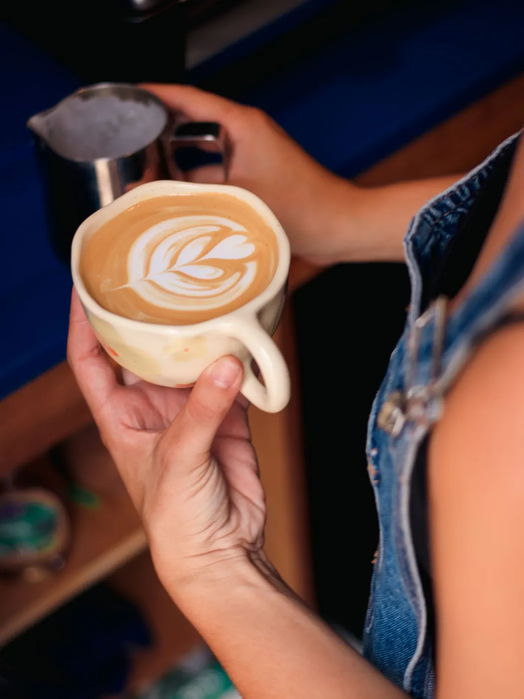
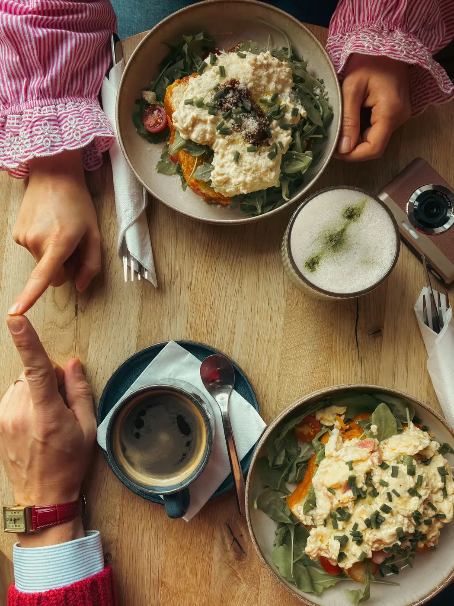
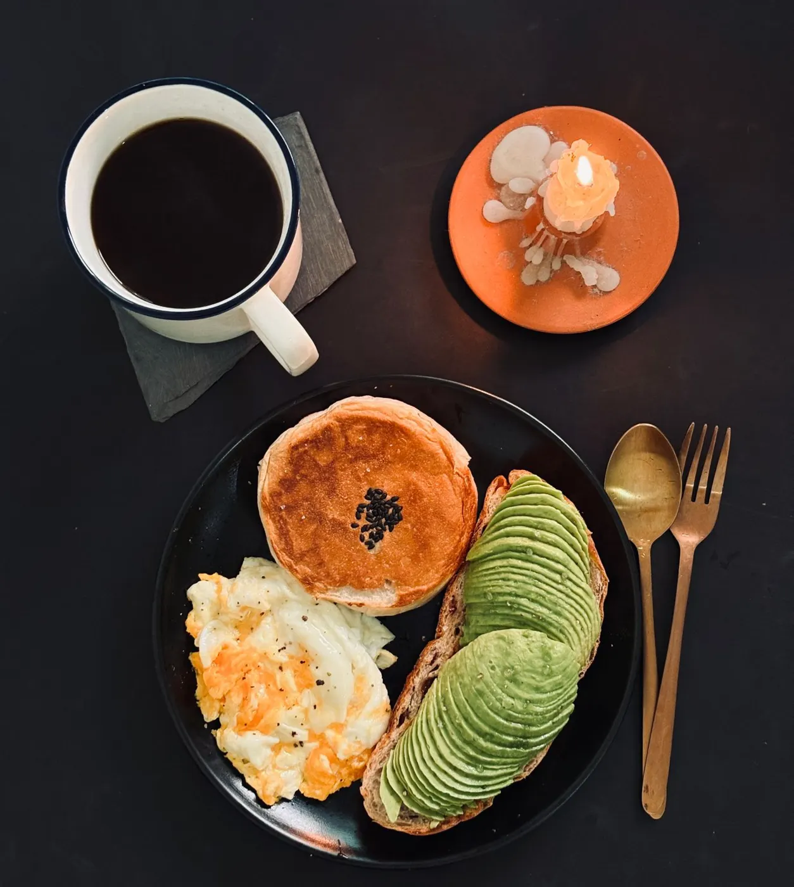
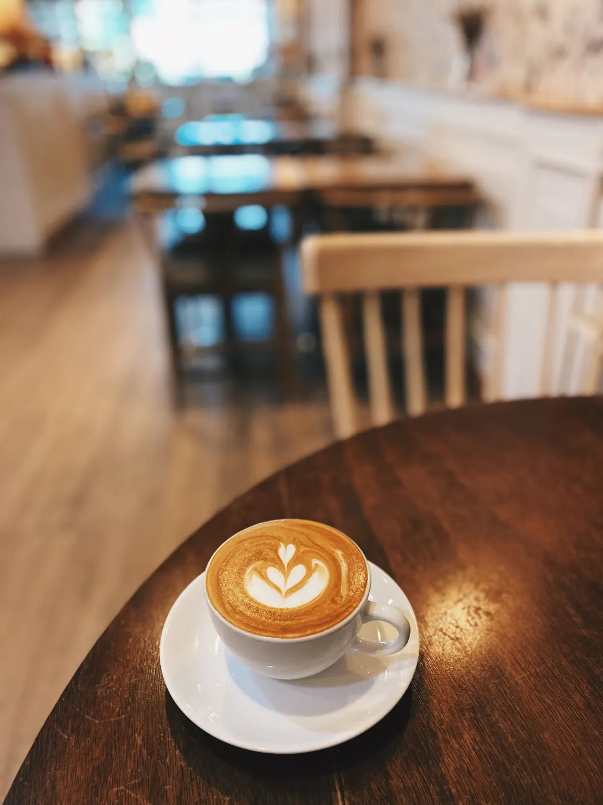

Café bar en San Lorenzo, sobre la Av. Fátima. Pocas reseñas, que destacan un café muy rico, servicio rápido y amabilidad.

Lo que destacan las reseñas
Pocas reseñas, que destacan un café muy rico, servicio rápido y amabilidad. 10 reseñas con un promedio de 4,7.
Café. Muy rico, según las reseñas.
Rápido. Servicio ágil.
Amabilidad. Mencionada por los clientes.
Resumen neutral de reseñas públicas de Google Maps. Sin citas textuales.



Servicios
| CaféDe especialidad y clásico. | Consultar |
|---|---|
| Algo para acompañarConsulte lo del día. | Consultar |
| Para llevarConsulte por WhatsApp. | Consultar |
| PedidosPor WhatsApp o por teléfono. | Consultar |
Horario
| Lunes | 7:30–19:30 |
|---|---|
| Martes | 7:30–19:30 |
| Miércoles | 7:30–19:30 |
| Jueves | 7:30–19:30 |
| Viernes | 7:30–19:30 |
| Sábado | 8:30–16:30 |
| Domingo | Cerrado |
Horario según la ficha pública; conviene confirmarlo por teléfono.